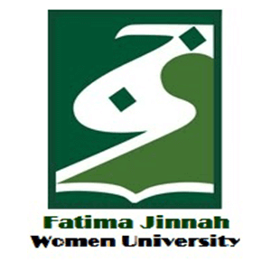

University Details
History
Established: 1998
Recognized: Higher Education Commission, Pakistan
Control Type: Public
Anthropology
- Undergraduate Program(s)
BS. Anthropology
Award: Bachelors of Anthropology
Attendance: Full Time
Duration: 4 Years
- Eligibility Criteria
The minimum requirements for admission in a Bachelor degree program in Anthropology, is open to all with 12 years of education (with 45% marks or 2nd Division)
- Duration
The minimum duration for completion of BS degree is four years. The HEC allows a maximum period of six years to complete BS degree requirements.
- Degree Completion Requirements
To become eligible for award of BS degree, a student must satisfy the following requirements:
Must have studied and passed the prescribed courses, totaling at least 130 credit hours (Including 6 credit hours compulsory thesis).
Must have earned CGPA (Cumulative Grade Point Average) of at least 2.0 on a scale of 4.0.
- M.Phil Program
M.Phil in Anthropology
Award: M.Phil in Anthropology
Attendance: Full Time
Duration: 2 Years
- Eligibility Criteria
The minimum requirements for admission in M.Phil degree program are
A. Sixteen years Education in Anthropology/Sociology/Gender Studies/Behavioral Sciences/Political Science and related disciplines. (GAT General is not required. Applicants will have to appear in a subject specific written test only)
AND
B. For Semester system
Minimum CGPA 2.5 out of 4.0 and 3.1 out of 5 in Masters/BS 4 years from any HEC recognized university/ institution.
For Annual system
1st division in Masters/BS 4 years from any HEC recognized University/Institution
- Duration
The minimum duration for completion of M.Phil degree is two years. The HEC allows a maximum period of four years to complete M.Phil degree requirements.
Degree Completion Requirements
To become eligible for award of MS degree, a student must satisfy the following requirements:
Must have studied and passed the prescribed courses, totaling at least 30 credit hours (Including 6 credit hours compulsory thesis).
Must have earned CGPA (Cumulative Grade Point Average) of at least 2.5 on a scale of 4.0.
Behavioral Sciences
- Bachelor Degree Program
Bachelors in Behavioral Sciences
Award: Bachelors in Behavioral Sciences
Attendance: Full Time
Duration: 4 Years
- Graduate Program
M. Phil in Psychology
Award: M. Phil in Psychology
Attendance: Full Time
Duration: 2 Years
- PhD in Psychology
Award: PhD in Psychology
Attendance: Full Time
Duration: 3 Years
Bio-Technology
- Undergraduate Program
BS Biotechnology (Hons)
Award: Bachelors of Biotechnology
Attendance: Full Time
Duration: 4 Years
Entry Requirment:F.Sc. Premedical/ equivalent
- Post Graduate Program
M.Phil Biotechnology
Award: M.Phil Biotechnology
Attendance: Full Time
Duration: 2 Years
Entry Requirment:Sixteen Years Education in Biological Sciences, Environmental Sciences, Agricultural Sciences, Pharmaceutical Sciences (with major in Microbiology /Biotechnology and related fields)
- Post Graduate Program
Ph.D Biotechnology
Award: Ph.D Biotechnology
Attendance: Full Time
Entry Requirment: MS/M. Phil. in Biotechnology, Biological Sciences, Biochemistry, Microbiology, Molecular Biology, Pharmaceutical Sciences. Graduates of Medical Schools and other disciplines can also be admitted after evaluation of their courses studied during their degree
Busniess Administration
- Scheme of Studies for BBS
Eligibility Criteria
The minimum requirements for admission in a Bachelor Business Studies is 2nd division, that is at least 50% marks in Intermediate (HSSC) examination, with B.Sc.(any combination)/B.A. with Maths/Stats/ Economics/ Psychology/ B.Com.
Score of 40 in NAT-II (National Aptitude Test conducted by NTS is treated as an Entry Test).
- Degree Completion Requirements
To become eligible for award of BBS degree, a student must satisfy the following requirements:
(a) Must have studied and passed the prescribed courses, totaling at least 66 credit hours.
(b) Must have earned CGPA (Cumulative Grade Point Average) of at least 2.0 on a scale of 4.0.
- Duration
The minimum duration for completion of BBS degree is two years.
- Scheme of Studies for BBA
Eligibility Criteria
The minimum requirements for admission in a Bachelor Business Administration is 2nd division, that is at least 50% marks in Intermediate (HSSC) examination with 12 years of formal schooling.
Entry Requirements: Open to all.
Score of 40 in NAT-I (National Aptitude Test conducted by NTS is treated as Entry Test) is required. Entry Test conducted by HEC through Education Testing Council (ETC) will also be accepted for undergraduate admissions only.
- Degree Completion Requirements
To become eligible for award of BBA degree, a student must satisfy the following requirements:
(a) Must have studied and passed the prescribed courses, totaling at least 129 credit hours.
(b) Must have earned CGPA (Cumulative Grade Point Average) of at least 2.0 on a scale of 4.0.
- Duration
The minimum duration for completion of BBS degree is two years.
- Scheme of Studies for BBA
Eligibility Criteria
The minimum requirements for admission in a Bachelor Business Administration is 2nd division, that is at least 50% marks in Intermediate (HSSC) examination with 12 years of formal schooling.
Entry Requirements: Open to all.
Score of 40 in NAT-I (National Aptitude Test conducted by NTS is treated as Entry Test) is required. Entry Test conducted by HEC through Education Testing Council (ETC) will also be accepted for undergraduate admissions only.
- Degree Completion Requirements
To become eligible for award of BBA degree, a student must satisfy the following requirements:
(a) Must have studied and passed the prescribed courses, totaling at least 129 credit hours.
(b) Must have earned CGPA (Cumulative Grade Point Average) of at least 2.0 on a scale of 4.0.
- Duration
The minimum duration for completion of BBA degree is four years
- Eligibility Criteria
Four years Bachelor degree with 16-years of education (Business Administration, Public Administration,Economics, Commerce, Statistics, Mathematics or any other relevant field from an HEC recognized educational institution with minimum CGPA 2.5/4.0 (Semester System)and GAT General Test (50% Marks)(16 years education with Statistics, Mathematics or any other relevant field will be required to complete deficiency courses as per HEC policy to become eligible for the MS program).
- Degree Completion Requirements
To become eligible for award of Master of Science in Business Administration degree, a student must satisfy the following requirements:
(a) Must have studied and passed the prescribed courses, totaling at least 30 credit hours.
(b) Must have earned CGPA (Cumulative Grade Point Average) of at least 2.5 on a scale of 4.0.
(c) Research topic is presented in Advanced Studies and Research Board (AS&RB) for approval. Moreover, thesis is optional for MS students, they can also go for two elective courses.
(d) Thesis is not mandatory.
- Duration
The minimum duration for completion of MS degree is 1.5 years.
Note:
FJWU Board of Studies for respective disciplines recommends the Scheme of Studies for M.Phil. and Ph. D. program. The scheme is liable to be revised from time to time. The general layout is as follows:
M.Phil. Semester I and Semester II:
The candidates are offered different courses in the first two semesters. A student is required to successfully complete 24 credit hours course work during this period.
M.Phil. Semester III and Semester IV:
After successful completion of first two semesters, synopsis of research thesis is required to be approved by the FJWU Board of Advanced Studies and Research. Semester III & IV are specified for research and 06 credit hours of research is mandatory for the award of the M.Phil degree.
Chemistry
- Undergraduate Program
BS Chemistry
Award: BS Chemistry
Attendance: Full Time
Duration: 4 Years
- Eligibility Criteria
12 years of education with chemistry as a major subject.
NAT with 40% marks
- Duration
Degree Duration: 4 Years
Semesters: 8
Semester duration : 16-18 weeks.
- Degree Completion Requirements
Total credit hours : 136
Research thesis : Optional (6 credit hours)
To become eligible for award of BS degree, a student must satisfy the following requirements:
Must have studied and passed the prescribed courses, totaling at least 136 credit hours.
Must have earned CGPA (Cumulative Grade Point Average) of at least 2.0 on a scale of 4.0.
Commerce
- Undergraduate Program
BS Commerce (Hons)
Award: Bachelors of Commerce
Attendance: Full Time
Duration: 4 Years
- Graduate Program
Master of Science in Accounting and Finance
Award: Master of Science in Accounting and Finance
Attendance: Full Time
Duration: 2 Years
Computer Science
- Master of Philosophy in Computer Science
Master of Philosophy in Computer Science is a two year degree program with a requirement of 30 credit hours. Thesis of 6 credit hours with 24 credit hours course work is mandatory for all students.Master of Philosophy in Computer Sciencecomprises of four semesters spread over two years. This program is career oriented, and courses offered offer a bright chance for Women of Pakistan to actualize themselves in the field of IT. The program is organized to enhance students' understanding of the theories, concepts and practices of computer science and to enable them to develop new competencies.A wide variety of elective subjects are offered which brings diversity in the program. It also includes provision of areas of specialization. The objective of the program is to train the students to be able to work in the Computer Science field at a relatively high level of responsibility and expertise.Students are encouraged to participate at national and international level conferences/workshops, which enhances their oral and written skills. All the courses have a compulsory weightage for the semester projects/presentations.
- Masters of Computer Science (MCS)
Master of Computer Science is a two year degree program with a requirement of 66 credit hours. Thesis of 6 credit hours is optional for students. Masters of Computer Science (MCS) degree program enables the graduates, to develop an understanding of the theoretical concepts that underlie the field of computer science; apply the theory to the practice of computing; foster an active, visible, and productive research; assume responsible positions in computing in industry and government at the research, planning, and development levels; and develop a foundation for continuing education and growth in the field of computer science.
- Bachelors of Computer Science (BCS)
The requirement for the degree of Bachelors of Computer Science (BCS) is 130 credit hours including 6 credit hours Final Year Project (FYP). In the last two semesters, the students have to work on Final Year project along with their elective courses. The program is organized to enhance students' understanding of the theories, concepts and practices of computer science and to enable them to develop new competencies.This program gives student a solid background in the theoretical principles underlying computer science and ensures that the graduate acquires the intellectual tools necessary to keep up-to-date in this rapidly evolving discipline. The emphasis is on practical application, research & enabling student’s master software development techniques along with providing an up-to-date basis for theoretical concepts.
Courses offered in the program are regularly reviewed by experts in the field of Computer Science. New courses are introduced that are consistent with the demand in this region and incorporate the impact of technology changes. Good computer facilities are available for class assignments, team projects, and individual studies. Students are challenged to seek original insights throughout their study. Working in teams, participating in summer internships, supporting student professional organizations, and developing interdisciplinary projects are strongly encouraged. Students have unlimited access too fully equipped computer labs for practical assignments, along with ongoing seminars, workshops by invited IT experts of National / International repute.
International Relations
- Undergraduate Program
Award: Bachelors in International Relations
Attendance: Full Time
Duration: 4 Years
Ecnomics
-
Associate Degree Program
Associate Degree Program in Economics
Award: Associate Degree in Economics
Attendance: Full Time
Duration: 2 Years
-
Eligibility Criteria
For admission in Associate Degree in Economics applicants are required to have:
2nd Division in Intermediate or equivalent to 12 years of education
-
Duration
The Associate Degree in Economics offers two years degree in Economics after 12 years of education and is equivalent to 14 years BA/BSc Degree
-
Degree Completion Requirements
To become eligible for award of Associate degree program, a student must satisfy the following requirements:
Must have studied and passed the prescribed courses, totaling at least 72 credit hours.
Must have earned CGPA (Cumulative Grade Point Average)of at least 2.5 on a scale of 4.0.
-
Undergraduate Program
Bachelor Degree Program in Economics
Award: Bachelors of Economics
Attendance: Full Time
Duration: 4 Years
-
Eligibility Criteria
Bachelor degree program in Economics is Open to all with 12 years of education
-
Duration
The minimum duration for completion of Bachelor degree program in Economics is four years. The HEC allows a maximum period of six years to complete BS degree requirements.
-
Degree Completion Requirements
To become eligible for award of Bachelor degree program, a student must satisfy the following requirements:
Must have studied and passed the prescribed courses, totaling at least 130 credit hours.
Must have earned CGPA (Cumulative Grade Point Average) of at least 2.0 on a scale of 4.0
-
M.Phil Program
M.Phil in Economics
Award: Master of Philosophy in Economics
Attendance: Full Time
Duration: 2 Years
-
Eligibility Criteria
The minimum requirements for admission in M. Phil in Economics isSixteen Years Education in Economics (only). (HAT/GAT General is not required. Applicants will have to pass subject specific written test and interview).
-
Duration
The minimum duration for completion of M. Phil degree is two years. The HEC allows a maximum period of four years to complete of degree requirements.
Degree Completion Requirements
To become eligible for award of M. Phil degree, a student must satisfy the following requirements:
Must have studied and passed the prescribed courses, totaling at least 30 credit hours including research thesis of 6 credit hours.
Must have earned CGPA(Cumulative Grade Point Average) of at least 2.5on a scale of 4.0.
PhD Program
Award: Doctor of Philosophy in Economics
Attendance: Full Time
Duration: 3 Years
Eligibility Criteria
The minimum requirements for admission in PhD in Economics is MS/M. Phil. in Economics. The candidate is require to get a minimum score of 60 in GAT Subject test conducted by the National Testing Service (NTS0, or ETS, USA in the area of specialization chosen at the PhD level (Prior to admission to the PhD Program).
Duration
The minimum duration for completion of PhD degree is three years. The HEC allows a maximum period of eight years to complete of degree requirements.
Degree Completion Requirements
To become eligible for award of PhD degree, a student must satisfy the following requirements:
Must have studied and passed the prescribed courses, totaling at least 18 credit hours.
Must have earned CGPA (Cumulative Grade Point Average) of at least 3.0 on a scale of 4.0.
Education
- Undergraduate Program
B.Ed (Hons.) Elementary Program
Award: Bachelors of Education
Attendance: Full Time
Duration: 4 Years
Diploma Program (Evening Program)
Award: Diploma in Early Childhood Education
Attendance: Full Time
Duration: 1 Years
- M.Phil Program
M.Phil in Education
Award: M.Phil in Education
Attendance: Full Time
Duration: 2 Years
- PhD Program
Award: PhD in Education
Attendance: Full Time
Duration: 3 Years
Education
- Undergraduate Program
B.Ed (Hons.) Elementary Program
Award: Bachelors of Education
Attendance: Full Time
Duration: 4 Years
Diploma Program (Evening Program)
Award: Diploma in Early Childhood Education
Attendance: Full Time
Duration: 1 Years
- M.Phil Program
M.Phil in Education
Award: M.Phil in Education
Attendance: Full Time
Duration: 2 Years
- PhD Program
Award: PhD in Education
Attendance: Full Time
Duration: 3 Years
English
- Undergraduate Program
Associate Degree English (Language and Literature)
Award: Associate Degree English (Language and Literature)
Attendance: Full Time
Duration: 2 Years
BS English (Language and Literature)
Award: BS English (Language and Literature)
Attendance: Full Time
Duration: 4 Years
- Graduate Program
Mphil English (Language and Literature)
Award: Mphil English (Language and Literature)
Attendance: Full Time
Duration: 2 Years
- Ph.D Program(s)
PhD English (Language and Literature)
Award: PhD English (Language and Literature)
Attendance: Full Time
Duration: 2 Years
Enviromental Sciences
- Undergraduate Program
Award: Bachelors of Environmental Sciences
Attendance: Full Time
Duration: 4 Years
Eligibility Criteria
The minimum requirements for admission in a Bachelor degree program in Environmental Sciences is 12 years education (Premedical, Pre Engineering) at least 50% marks in Intermediate (HSSC).
Duration
The minimum duration for completion of BS degree is four years. The HEC allows a maximum period of seven years to complete BS degree requirements.
Degree Completion Requirements
To become eligible for award of BS degree, a student must satisfy the following requirements:
Must have studied and passed the prescribed courses, totaling at least 130 credit hours.
Must have earned CGPA (Cumulative Grade Point Average) of at least 2.0 on a scale of 4.0.
M.Phil Program
M.Phil in Environmental Sciences
Award: M.Phil in Education
Attendance: Full Time
Duration: 2 Years
M.Phil in Environmental Sciences (Chemistry)
Award: M.Phil in Education
Attendance: Full Time
Duration: 2 Years
Eligibility Criteria
The minimum requirements for admission in a M.Phil degree program are:
14 years of Education in Environmental Sciences, Chemistry, Biological Sciences, Agricultural Science, Forestry, Earth Sciences Bio Chemistry, Bio Informatics, Environmental Engineering, Energy System Engineering, Civil Engineering, Material Sciences, Nanotechnology
At least CGPA of 2.0 (on a scale of 4.0) or 60% Marks
Duration
The minimum duration for completion of M.Phil degree is two years. The HEC allows a maximum period of four years to complete M.Phil degree requirements.
Degree Completion Requirements
To become eligible for award of M.Phil degree, a student must satisfy the following requirements:
Must have studied and passed the prescribed courses, totaling at least 30 credit hours.
Must have earned CGPA (Cumulative Grade Point Average) of at least 2.5on a scale of 4.0.
Fine Arts
- Undergraduate Program
Bachelors Program
Award: Bachelors in Fine Arts (Fine Arts)
Attendance: Full Time
Duration: 4 Years
Bachelors Program
Award: Bachelors in Fine Arts (Design)
Attendance: Full Time
Duration: 4 Years
Eligibility Criteria
Open to all with 12 years of formal schooling with at least 50% marks in Intermediate (HSSC) examination.
Duration
The minimum duration for completion of Bachelor’s degree is four years. The HEC allows a maximum period of seven years to complete Bachelor’s degree requirements.
Degree Completion Requirements
To become eligible for award of Bachelor’s degree, a student must satisfy the following requirements:
Internship credits, Status of Internship (Credited/ Non credited): Compulsory, 2 Cr hrs
Community work Compulsory, Non Credited
Required Credits (Course Work, Internship &Thesis): 130
Status of Thesis (Optional/Mandatory): Mandatory
Thesis Credit: 6
Must have earned CGPA (Cumulative Grade Point Average) of at least 2.0 on a scale of 4.0.
Gender Studies
- Undergraduate Program
Bachelors Program
Award: Bachelors of Gender Studies
Attendance: Full Time
Duration: 4 Years
Bachelors Program
Award: BS in Gender and Development Studies
Attendance: Full Time
Duration: 4 Years
M.Phil Program
M.Phil in Gender Studies
Award: M.Phil in Gender Studies
Attendance: Full Time
Duration: 2 Years
Islamic Studies
-
Undergraduate Program
Award: Bachelors of Islamic Studies
Attendance: Full Time
Duration: 4 Years
M.Phil Program
M.Phil in Islamic Studies
Award: M.Phil in Islamic Studies
Attendance: Full Time
Duration: 2 Years
Mathematical Sciences
-
Undergraduate Program
Award: Bachelors in Mathematical Sciences
Attendance: Full Time
Duration: 4 Years
M.Phil Program
M.Phil in Mathematics
Award: M.Phil in Mathematics
Attendance: Full Time
Duration: 2 Years The HEC allows a maximum period of four years to complete MPhil degree requirements
-
PhD Program
Award: Doctor of Philosophy in Mathematics
Attendance: Full Time
Duration: 3 Years The HEC allows a maximum period of eight years to complete PhD degree requirements.
Physics
-
Undergraduate Program
BS physics
Award: Bachelors of physics
Attendance: Full Time
Duration: 4 Years
Public Administration
-
Undergraduate Program
Award: Bachelor in Public Administration
Attendance: Full Time
Duration: 4 Years
Program Objectives
To acquire and enhance understanding regarding political, economic, social, legal, technology, environment context.
To sensitize the students to analyze problems, institutions, actors and processes.
To develop cognitive competencies for problem solving through application of acquired knowledge.
To develop administrative and supervisory competencies for goal achievement.
To develop skills for effective communication
Eligibility Criteria
The entry requirement for bachelor program is as follows:
FA/F.Sc (open to all with 12 years of education)
NAT 1 40% score required
Duration
The minimum duration for completion of Bachelors degree is four years. The HEC allows a maximum period of seven years to complete Bachelors degree requirements.
Degree Completion Requirements
Degree Requirement: 132 credit hours
University Core Courses* 25 credit hrs.
General Education: 24 credit hrs.
Program Foundation Courses: 30 credit hrs.
Program Major Courses: 39 credit hrs.
Program Electives** (4 courses): 12 credit hrs.
Thesis (optional in lieu of 2 elective courses) 06 credit hrs.
Internship: 02 (after 6th semester)
*University core courses are university required courses.
**Program elective courses are the specialization courses. There are seven specializations from which students can opt for any 1 and choose four courses from a list of courses offered in that particular specialization.
Must have earned CGPA (Cumulative Grade Point Average) of at least 2.0 on a scale of 4.0.
M.Phil Program
MPhil in Public Management
Award: M.Phil in Public Management
Attendance: Full Time
Duration: 2 Years
Program Objectives
The program has developed following objectives:
To enhance the capacity of students to think and plan strategically and analyze environment that affects organizations and society;
Provide an interdisciplinary approach to research. Water-tight compartments between different disciplines will be broken down through this program;
Stimulate the cross-fertilization of ideas that will enrich the Management research;
Deliver the government, industry and management institutes with individuals equipped with a high level of research capability and experience;
Be responsible for a thorough understanding of the management theories and their applications in various fields, along with the ability to think systematically about, and apply quantitative methods to solve organizational problems;
Eligibility Criteria
The minimum requirements for admission in a MPhil degree program are:
16 years of formal education or 4 years education after FA/FSc/A-level or equivalent (at least 130 credit hours) with at least 2nd division (CGPA 2.5) in relevant field (Public Administration, Business Administration, Commerce, Economics, International Relations, Political Science and any other relevant field).
GAT (General) Test with a minimum 50% cumulative score.
Interview
A candidate for admission has no age limit as long as there is no mental handicap.
Duration
The program is full time research oriented delivered over a minimum period of two years with four semesters. The HEC allows a maximum period of four years to complete MS degree requirements.
The medium of instruction is English.
Degree Completion Requirements
The degree will be awarded after:
Completion of minimum of 30 credit hours (24 credit hours of course work and 6 credit hours of research thesis); and
A minimum grade point average of 2.5 on 4.00 grade point scale. However, admission in PhD requires minimum of 3.0 grade point average on a scale of 4.0 grade point scale.
Students must complete their degree within stipulated time period of 2 years with an extendable time of 1 year (maximum duration 3 years or 6 semesters) after which student will be deregistered and will have to seek new admission. Maximum duration includes all reasons like semester freeze/leave, repeats, disciplinary, etc.
Research Thesis
M.Phil in Public Management is a rigorous research oriented degree requiring a 06 credit hours of research thesis. The thesis should demonstrate the student’s competence in completing an independent research project including demonstration that student is conversant with the latest and relevant literature, and has applied methods appropriate to the specific field of management under investigation. The thesis may entail cooperation with government agencies and institutions, nonprofit national and international organizations and for-profit corporate sector and with other faculties at the University.
PhD Program
Award: PhD in Public Management
Attendance: Full Time
Duration: 3 Years
Program Objectives
The objectives of the program are as follows:
To provide students with communicative and administrative skills. The degree is rooted in the fundamentals of human interaction and organization, which can give a person an advantage in any field of work.
To impart in depth knowledge and enable students to investigate original research problems through a systematic and focused approach
To enable students to acquire new knowledge and practice lifelong learning by keeping themselves up to date with the ever evolving management and administrative skills.
To enable students to conduct independent innovative research and publish in journals and conferences of international repute.
To train the students to be able to work in the administrative and management fields with maturity, responsibility and expertise.
Eligibility Criteria
For admission into the PhD minimum CGPA 3.0 (out of 4.0 in the Semester System) or First Division (in the Annual System) after 18 years of relevant education is required.
GAT Subject test with minimum of 60% marks or should have scored international GRE (subject specific) with 60% percentile is required.
Subject Test:
A subject test conducted by the National Testing Service (NTS) or ETS, USA in the area of specialization chosen at the PhD level must be cleared prior to admission for the PhD Program.
a. In the case of GAT Subject test (http://www.nts.org.pk/GAT/GATSubject.asp) a minimum of 60% marks is required to pass the test.
b. If the Test is not available in NTS subject list, then a University Committee consisting of at least 3 PhD faculty members in the subject area and approved by the HEC will conduct the Test at par with GRE Subject Test and qualifying score for this will be 70% score.
Duration
This program is a full time research oriented delivered over a minimum period of three years and maximum of eight years with six semesters. A PhD scholar shall be required to successfully complete all of the following requirements:
18 Cr. Hrs. Course Work;
30 Cr. Hrs. Research Work;
Comprehensive Examination (maximum 2 attempts)
PhD research proposal;
Dissertation foreign reviews (The Ph.D. Dissertation must be evaluated by at least two Ph.D. experts from technologically/academically advanced foreign countries in addition to local Committee members)
Publication/acceptance of at least one research paper in a reputed research journal/HEC recognized journal, and
Open defense (An open defense of Dissertation is essential part of PhD Program after positive evaluation)
Subject to regulation 5(10) a PhD scholar shall be ceased to continue his/her studies if he/she fails to complete 18 Cr. Hrs. coursework within four regular semesters with at least 3.00/4.00 CGPA.
It should also be noted that non-credit courses such as "Research Methods (Qualitative and Quantitative)" and Colloquium in Public Management and Policy (or any other subject from specialization) must also be passed; unless already passed during MPhil course work
Public Health
-
Undergraduate Program
BS Public Health
Award: Bachelor of Science in Public Health
Attendance: Full Time
Duration: 4 Years
Sociology
-
Undergraduate Program
Sociology (BS Sociology)
Award: Bachelors of Sociology
Attendance: Full Time
Duration: 4 Years
Eligibility Criteria
Open to all with 12 years of education.
Duration
The minimum duration for completion of BS degree is four years.
Degree Completion Requirements
To become eligible for award of BS degree, a student must satisfy the following requirements:
Must have studied and passed the prescribed courses, totaling at least 130 credit hours.
Must have earned CGPA (Cumulative Grade Point Average) of at least 2.0 on a scale of 4.0.
M.Phil Program
Sociology (M.Phil. Sociology)
Award: M.Phil in Sociology
Attendance: Full Time
Duration: 2 Years
Eligibility Criteria
The minimum requirements for admission in an M.Phil. Degree program are
Sixteen year of education in Sociology. Social Work, Gender Studies & Behavioral Sciences.
At least CGPA of 2.0 (on a scale of 4.0) or 60% Marks
Duration
The minimum duration for completion of M.Phil. degree is two years.
Degree Completion Requirements
To become eligible for award of M.Phil. Degree, a student must satisfy the following requirements:
Must have studied and passed the prescribed courses, totaling at least 30 credit hours.
Must have earned CGPA (Cumulative Grade Point Average) of at least 2.5on a scale of 4.0.
Today: Sun, 30-Apr-2023
News & Events
Latest NewsNews Archive
FJWU Email
For Staff Only
DEPARTMENTS LINK
DEPARTMENTS
Location
Nearby Hostels
Backpackers Hostel Islamabad
PRICE : Rs 5390
(NOTE: PRICES MAY VARY ACCORDING TO THE DATES KINDLY VISIT GIVEN LINKS AND CONTACT NUMBERS)
ADDRESS :KHudadad Heights, Main Margalla Rd, Golra E-11, Islamabad, Islamabad Capital Territory 46000, Pakistan
SITE: N/A
Contact : 03159276449
LOCATION
Fatima Tuz Zahra Group of Hostels
PRICE : N/A
(NOTE: PRICES MAY VARY ACCORDING TO THE DATES KINDLY VISIT GIVEN LINKS AND CONTACT NUMBERS)
ADDRESS : House no, 1461 street no 4, I-11/2 I 11/2 I-11, Islamabad, Islamabad Capital Territory 44000, Pakistan
SITE: http://www.hamariproperty.pk/
Contact :03040060020
LOCATION
Islamabad Hostel
PRICE : N/A
(NOTE: PRICES MAY VARY ACCORDING TO THE DATES KINDLY VISIT GIVEN LINKS AND CONTACT NUMBERS)
ADDRESS : house 421 Street 36, Sector I-8/2 I 8/2 I-8, Islamabad, Islamabad Capital Territory 44000, Pakistan
SITE: http://www.shalimarhostel.com/
Contact : 03360016205
LOCATION
PUBLIC TRANSPORTATION
METRO STATION LOCATIONS
Ranking
Country Rank: 62 – webometrics.info
Rank: 4876 – webometrics.info